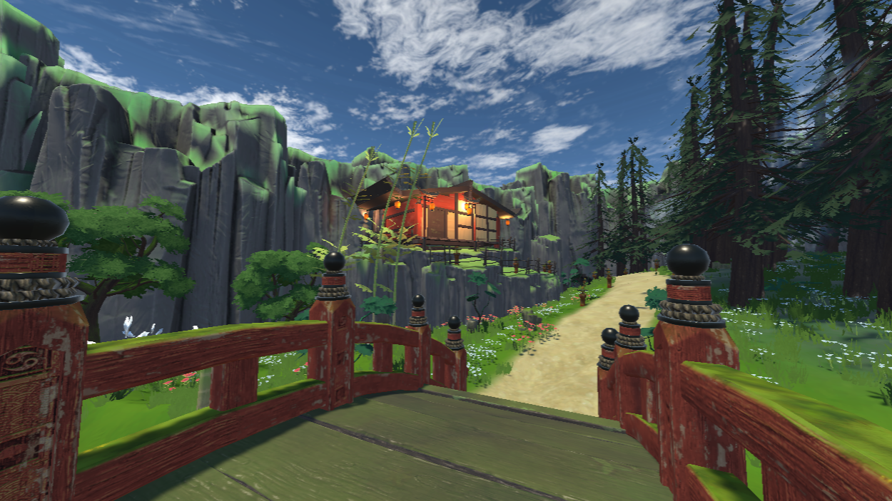
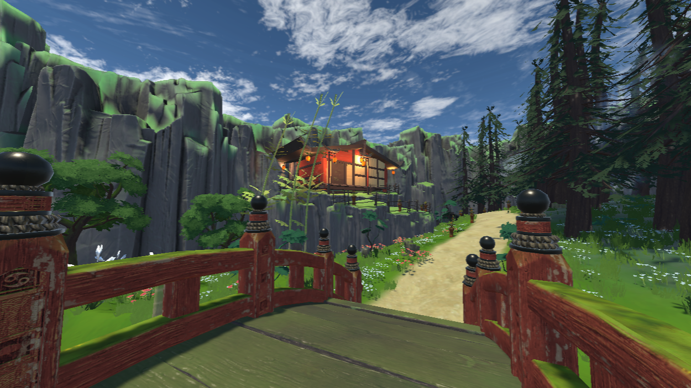

SANYEH
A game designer with a passion for shaping games into art and letting emotion drive the journey.

A game designer with a passion for shaping games into art and letting emotion drive the journey.
I’m a game design student at Kristiania University College in Oslo, passionate about creating interactive experiences that combine art, music, and storytelling. My love for creativity started early, exploring theatre, music, and drawing, and it continues to shape the way I approach games today.
I’m fascinated by the inner world and how our emotions respond to the world around us. I aim to create abstract experiences that guide players toward the emotional truths those external experiences evoke, moments of reflection, connection, and imagination.
Game design gives me a way to combine all of this: visual art, sound, and interactivity, working together to craft meaningful, emotional journeys that players can feel and explore for themselves.
 2D ART

3D ART
2D ART

3D ART
 MUSIC
MUSIC